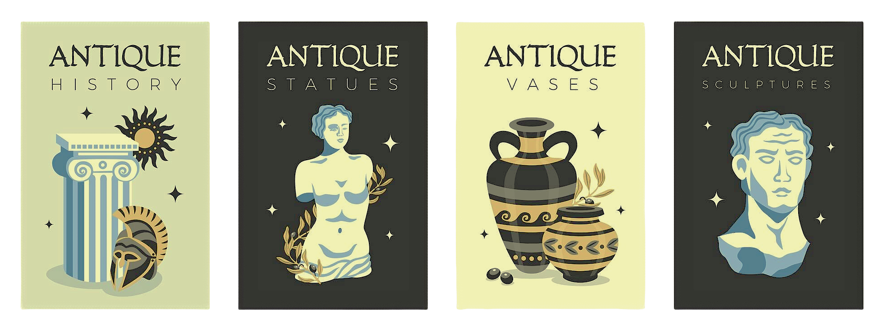
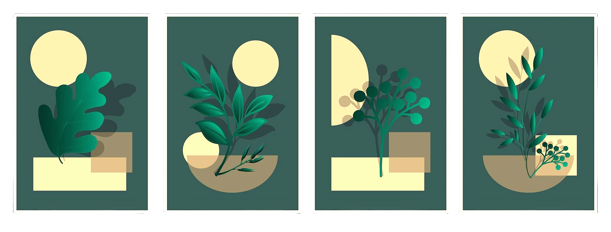

Изобразительное искусство
Изобразительное искусство является одной из самых древних и значимых форм выражения человеческой культуры. Оно играет важную роль в современном мире, оказывая влияние на различные аспекты нашей жизни. Оно помогает нам наслаждаться красотой, узнавать о прошлом, выражать эмоции, развиваться культурно и социально, а также получать удовольствие от творчества.
История искусства
История изобразительного искусства охватывает тысячелетия и включает в себя множество стилей и направлений. Она изучает процесс развития и становления видов и жанров живописи, графики и скульптуры, анализирует творческий метод и художественные особенности произведений искусства.
Основные периоды, которые оказали огромное влияние на развитие культуры и эстетики:
Древний мир. В этот период были заложены основы изобразительного искусства. Древние цивилизации создали множество произведений искусства, которые до сих пор восхищают нас своей красотой и мастерством. В Древнем Египте развивалась монументальная скульптура и живопись, в Древней Греции — классическая скульптура и живопись, а в Древнем Риме — портретная скульптура и живопись.
Средние века. В этот период изобразительное искусство было тесно связано с религией и церковью. Художники создавали иконы, фрески и мозаики для храмов и монастырей. В этот период развивались такие направления, как романский и готический стили.
Возрождение (Ренессанс). Это период расцвета искусства, который начался в Италии в XIV веке и распространился на другие европейские страны. Художники Возрождения стремились к реалистичному изображению мира, изучали анатомию человека и перспективу. В этот период были созданы такие шедевры, как «Тайная вечеря» Леонардо да Винчи и «Сикстинская мадонна» Рафаэля.
Барокко. Это стиль, который зародился в Италии в XVII веке и быстро распространился по всей Европе. Художники барокко стремились к драматизму и эмоциональности в своих произведениях. В этот период были созданы такие шедевры, как «Возвращение блудного сына» Рембрандта, «Ночь» Караваджо и «Даная» Рембрандта.
Классицизм. Это направление, которое возникло в XVII веке как реакция на барокко. Художники классицизма стремились к гармонии и ясности в своих произведениях..
Романтизм. Это направление, которое возникло в XIX веке как реакция на рационализм и классицизм. Художники романтизма стремились к свободе и самовыражению в своих произведениях. В этот период были созданы такие шедевры, как «Свобода, ведущая народ» Эжена Делакруа и «Крик» Эдварда Мунка.
Импрессионизм. Это направление, которое возникло во второй половине XIX века во Франции. Художники импрессионизма стремились передать впечатление от окружающего мира, используя светлые и яркие цвета.
Модернизм. Это направление, которое возникло в начале XX века как реакция на традиционные стили. Художники модернизма стремились к новаторству и эксперименту в своих произведениях. В этот период были созданы такие шедевры, как «Крик» Эдварда Мунка и «Звёздная ночь» Винсента ван Гога.
Каждый из них оставил свой след в культуре и эстетике, и продолжает вдохновлять художников по всему миру.
Современное искусство
Современное искусство включает в себя множество новых форм и технологий, таких как цифровое искусство и инсталляции. Новые медиа также играют важную роль в современном искусстве. Одной из основных особенностей новых медиа является их способность объединять различные виды искусства и создавать новые формы выражения. Они позволяют художникам экспериментировать с различными техниками и материалами, а также взаимодействовать с аудиторией на более глубоком уровне.
Среди жанров, присутствующих в современном искусстве, можно выделить концептуальное искусство, которое фокусируется на идеях и концепциях, а не на визуальных образах. Этот жанр часто использует язык, текст и другие формы коммуникации для передачи своих идей. Инсталляции, как трехмерные произведения искусства, также занимают важное место в современном искусстве. Они могут быть созданы с использованием различных материалов и технологий, включая видео, звук, свет и интерактивные элементы. Видеоарт и перформанс также являются значимыми жанрами, позволяющими художникам исследовать время, пространство и взаимодействие с аудиторией.
Современное искусство также включает в себя уличное искусство, граффити и другие формы визуального выражения, которые часто появляются в общественных пространствах и становятся частью городской культуры. Фотография и видеография продолжают развиваться, предлагая новые способы фиксации и интерпретации реальности. В последние годы также наблюдается рост интереса к гибридным жанрам, таким как мультимедиа и интерактивное искусство, которые объединяют элементы различных медиа и технологий для создания уникальных художественных опытов.
Среди выдающихся художников современности можно выделить таких мастеров, как Бэнкси, чьи работы сочетают в себе элементы стрит-арта и социального комментария, и Сальвадора Дали, чьи сюрреалистические произведения продолжают вдохновлять художников и зрителей по всему миру.
Ещё одним интересным жанром современного искусства является '''иммерсивное искусство''', которое стремится создать максимально погружающую и интерактивную среду для зрителя. Иммерсивные выставки и перформансы часто используют театральные элементы, виртуальную реальность и другие инновационные технологии для создания уникального художественного опыта. Они позволяют зрителю стать частью произведения искусства и пережить его на более глубоком уровне.
Также стоит отметить '''цифровое искусство''', которое использует компьютерные технологии для создания и представления художественных работ. Это может быть как создание цифровых изображений и видео, так и использование интерактивных платформ и виртуальных миров для взаимодействия с аудиторией. Цифровое искусство открывает новые возможности для художников и позволяет им экспериментировать с формами и идеями.